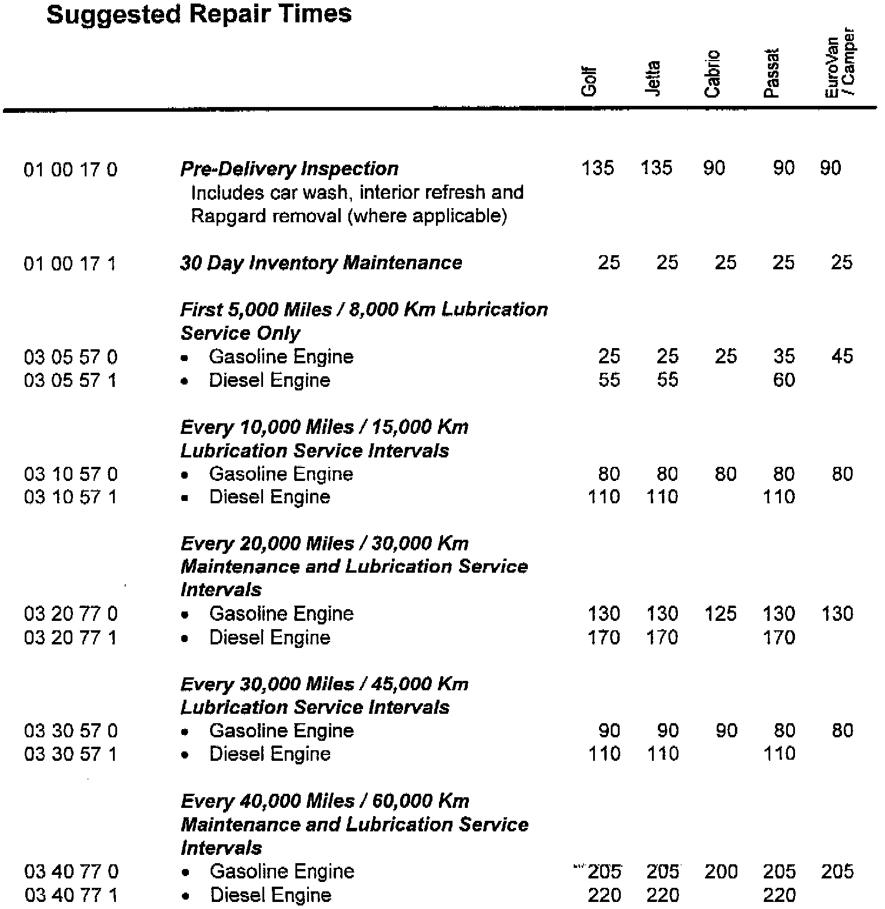
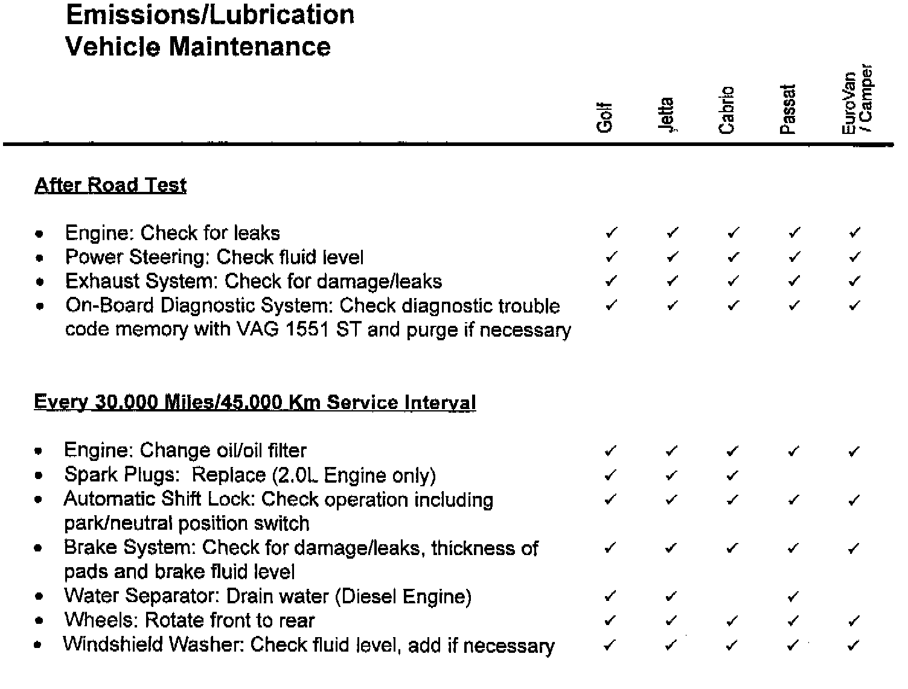

Maintenance - Schedule
Number: V 96-02Date: SEPT. 1, 1996
Subject:
1997 Model Year Pre-Delivery Inspection Procedure and Maintenance/Lubrication Schedule
US/Canada
This Service Circular contains the Pre-Delivery Inspection Procedure, 30 Day Inventory and Maintenance/Lubrication Schedules for 1997 Model Year Volkswagen vehicles. Suggested Repair Times for these schedules are included. Note: PreDelivery Inspection suggested repair times are applicable to U.S. only.
For states requiring a manufacturer's statement regarding the delivery inspection procedure, the Pre-Delivery Inspection section of this Circular may be utilized for that purpose.

Suggested Repair Times
Pre-Delivery Inspection Procedure
^ Under Hood Checks
^ Exterior Checks
^ Interior Checks
^ On Hoist Checks
^ Road Test Checks
30 Day Inventory Maintenance

Lubrication/Emissions Vehicle Maintenance Schedule
^ First 5,000 Mile/8,000 Km Lubrication Service Only
^ Every 10,000 Miles/15,000 Km Lubrication Service
^ Every 20,000 Miles/30,000 Km Lubrication/Maintenance Service
During Road Test
After Road Test
^ Every 30,000 Miles/45,000 Km Lubrication Service
^ Every 40,000 Miles/60,000 KM Lubrication I Maintenance Service
During Road Test
After Road Test